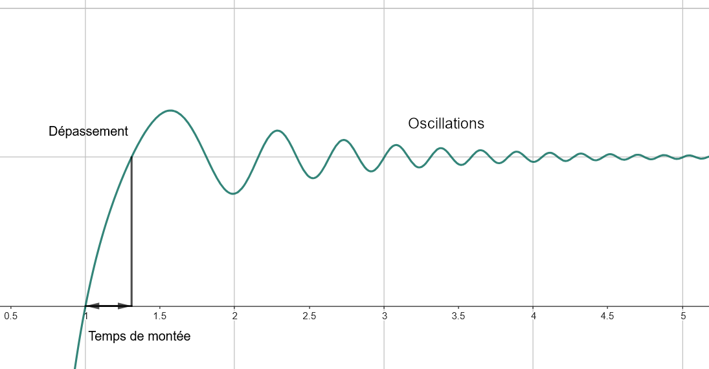

<!DOCTYPE html>
<html lang="en">
  <head>
    <meta charset="utf-8" />
    <meta name="viewport" content="width=device-width, initial-scale=1.0, maximum-scale=1.0, user-scalable=no" />

    <title></title>
    <link rel="stylesheet" href="../include/dist/reveal.css" />
    <link rel="stylesheet" href="../include/dist/theme/white.css" id="theme" />
    <link rel="stylesheet" href="../include/css/vs2015.css" />
	<link rel="stylesheet" href="../include/css/layout.css" />
	<link rel="stylesheet" href="../include/plugin/customcontrols/style.css">
	<link rel="stylesheet" href="../include/plugin/chalkboard/style.css">


    <script defer src="../include/dist/fontawesome/all.min.js"></script>

	<script type="text/javascript">
		var forgetPop = true;
		function onPopState(event) {
			if(forgetPop){
				forgetPop = false;
			} else {
				parent.postMessage(event.target.location.href, "app://obsidian.md");
			}
        }
		window.onpopstate = onPopState;
		window.onmessage = event => {
			if(event.data == "reload"){
				window.document.location.reload();
			}
			forgetPop = true;
		}

		function fitElements(){
			const itemsToFit = document.getElementsByClassName('fitText');
			for (const item in itemsToFit) {
				if (Object.hasOwnProperty.call(itemsToFit, item)) {
					var element = itemsToFit[item];
					fitElement(element,1, 1000);
					element.classList.remove('fitText');
				}
			}
		}

		function fitElement(element, start, end){

			let size = (end + start) / 2;
			element.style.fontSize = `${size}px`;

			if(Math.abs(start - end) < 1){
				while(element.scrollHeight > element.offsetHeight){
					size--;
					element.style.fontSize = `${size}px`;
				}
				return;
			}

			if(element.scrollHeight > element.offsetHeight){
				fitElement(element, start, size);
			} else {
				fitElement(element, size, end);
			}		
		}


		document.onreadystatechange = () => {
			fitElements();
			if (document.readyState === 'complete') {
				if (window.location.href.indexOf("?export") != -1){
					parent.postMessage(event.target.location.href, "app://obsidian.md");
				}
				if (window.location.href.indexOf("print-pdf") != -1){
					let stateCheck = setInterval(() => {
						clearInterval(stateCheck);
						window.print();
					}, 250);
				}
			}
	};


        </script>
  </head>
  <body>
    <div class="reveal">
      <div class="slides"><section  data-markdown><script type="text/template"><!-- .slide: class="drop" -->
<div class="" style="position: absolute; left: 0px; top: 0px; height: 700px; width: 960px; min-height: 700px; display: flex; flex-direction: column; align-items: center; justify-content: center" absolute="true">

# Séance spéciale
## PID
</div></script></section><section  data-markdown><script type="text/template"><!-- .slide: class="drop" -->
<div class="" style="position: absolute; left: 0px; top: 0px; height: 700px; width: 960px; min-height: 700px; display: flex; flex-direction: column; align-items: center; justify-content: center" absolute="true">

## PID

- Signification : **P**roportionnel **I**ntégral **D**érivé
- Utilité : optimiser la réponse d'un système fermé en fonction de mesures et d'une consigne

</div></script></section><section  data-markdown><script type="text/template"><!-- .slide: style="font-size: 70%" class="drop" -->
<div class="" style="position: absolute; left: 0px; top: 0px; height: 700px; width: 960px; min-height: 700px; display: flex; flex-direction: column; align-items: center; justify-content: center" absolute="true">

## Un peu de vocabulaire...

- &shy;<!-- .element: class="fragment" data-fragment-index="1" --> **Réponse** : puissance, le plus souvent donnée à un moteur, qui modifie l'état du système
- &shy;<!-- .element: class="fragment" data-fragment-index="2" --> **Consigne** : état que le système doit atteindre
- &shy;<!-- .element: class="fragment" data-fragment-index="3" --> **Mesure** : approximation de l'état du système à un temps *t*
- &shy;<!-- .element: class="fragment" data-fragment-index="4" --> **Erreur** : différence entre la consigne et la mesure


</div></script></section><section  data-markdown><script type="text/template"><!-- .slide: style="font-size: 70%" class="drop" -->
<div class="" style="position: absolute; left: 0px; top: 0px; height: 700px; width: 960px; min-height: 700px; display: flex; flex-direction: column; align-items: center; justify-content: center" absolute="true">

## Intuition du fonctionnement

- P : plus l'erreur est grande, plus la réponse doit être forte
- I : plus l'erreur s'accumule au cours du temps, plus la réponse doit être forte
- D : quand l'erreur subit des variations, il faut stabiliser l'état du système

</div></script></section><section  data-markdown><script type="text/template"><!-- .slide: style="font-size: 70%" class="drop" -->
<div class="" style="position: absolute; left: 0px; top: 0px; height: 700px; width: 960px; min-height: 700px; display: flex; flex-direction: column; align-items: center; justify-content: center" absolute="true">

## Visualisation




</div></script></section><section  data-markdown><script type="text/template"><!-- .slide: style="font-size: 70%" class="drop" -->
<div class="" style="position: absolute; left: 0px; top: 0px; height: 700px; width: 960px; min-height: 700px; display: flex; flex-direction: column; align-items: center; justify-content: center" absolute="true">


## 3 coefficients pour moduler le PID

Action des coefficients (lorsqu'ils augmentent) sur différents aspects

| Coefficient | Temps de montée | Dépassement | Oscillations |
| --- | --- | --- | --- |
| Proportionnel | Diminue | Augmente | Augmentent | 
| Intégral | Diminue | Augmente | Augmentent |
| Dérivé | Augmente | Diminue | Diminuent |

</div></script></section><section  data-markdown><script type="text/template"><!-- .slide: style="font-size: 70%" class="drop" -->
<div class="" style="position: absolute; left: 0px; top: 0px; height: 700px; width: 960px; min-height: 700px; display: flex; flex-direction: column; align-items: center; justify-content: center" absolute="true">

## Pour les élèves en terminale

En notant *r(t0)* la réponse à donner au temps *t0* et *e(t0)* l'erreur au temps *t0*, on devrait avoir la relation suivante :


</div></script></section><section  data-markdown><script type="text/template"><!-- .slide: style="font-size: 70%" class="drop" -->
<div class="" style="position: absolute; left: 0px; top: 0px; height: 700px; width: 960px; min-height: 700px; display: flex; flex-direction: column; align-items: center; justify-content: center" absolute="true">

## Comment optimiser un pid ?

- Commencer par le coefficient proportionnel
- Ajuster le coefficient intégral si le système n'évolue plus au-delas d'un certain seuil

</div></script></section><section  data-markdown><script type="text/template"><!-- .slide: style="font-size: 70%" class="drop" -->
<div class="" style="position: absolute; left: 0px; top: 0px; height: 700px; width: 960px; min-height: 700px; display: flex; flex-direction: column; align-items: center; justify-content: center" absolute="true">

</div></script></section><section  data-markdown><script type="text/template"><!-- .slide: style="font-size: 70%" class="drop" -->
<div class="" style="position: absolute; left: 0px; top: 0px; height: 700px; width: 960px; min-height: 700px; display: flex; flex-direction: column; align-items: center; justify-content: center" absolute="true">
</script></section></div>
    </div>

    <script src="../include/dist/reveal.js"></script>

    <script src="../include/plugin/markdown/markdown.js"></script>
    <script src="../include/plugin/highlight/highlight.js"></script>
    <script src="../include/plugin/zoom/zoom.js"></script>
    <script src="../include/plugin/notes/notes.js"></script>
    <script src="../include/plugin/math/math.js"></script>
	<script src="../include/plugin/mermaid/mermaid.js"></script>
	<script src="../include/plugin/chart/chart.min.js"></script>
	<script src="../include/plugin/chart/plugin.js"></script>
	<script src="../include/plugin/customcontrols/plugin.js"></script>
	<script src="../include/plugin/chalkboard/plugin.js"></script>

    <script>
      function extend() {
        var target = {};
        for (var i = 0; i < arguments.length; i++) {
          var source = arguments[i];
          for (var key in source) {
            if (source.hasOwnProperty(key)) {
              target[key] = source[key];
            }
          }
        }
        return target;
      }

	  function isLight(color) {
		let hex = color.replace('#', '');

		// convert #fff => #ffffff
		if(hex.length == 3){
			hex = `${hex[0]}${hex[0]}${hex[1]}${hex[1]}${hex[2]}${hex[2]}`;
		}

		const c_r = parseInt(hex.substr(0, 2), 16);
		const c_g = parseInt(hex.substr(2, 2), 16);
		const c_b = parseInt(hex.substr(4, 2), 16);
		const brightness = ((c_r * 299) + (c_g * 587) + (c_b * 114)) / 1000;
		return brightness > 155;
	}

	var bgColor = getComputedStyle(document.documentElement).getPropertyValue('--r-background-color').trim();
	var isLight = isLight(bgColor);

	if(isLight){
		document.body.classList.add('has-light-background');
	} else {
		document.body.classList.add('has-dark-background');
	}

      // default options to init reveal.js
      var defaultOptions = {
        controls: true,
        progress: true,
        history: true,
        center: true,
        transition: 'default', // none/fade/slide/convex/concave/zoom
        plugins: [
          RevealMarkdown,
          RevealHighlight,
          RevealZoom,
          RevealNotes,
          RevealMath.MathJax3,
		  RevealMermaid,
		  RevealChart,
		  RevealCustomControls,
		  RevealChalkboard, 
        ],


    	allottedTime: 120 * 1000,

		mathjax3: {
			mathjax: '../include/plugin/math/mathjax/tex-mml-chtml.js',
		},
		markdown: {
		  gfm: true,
		  mangle: true,
		  pedantic: false,
		  smartLists: false,
		  smartypants: false,
		},

		mermaid: {
			theme: isLight ? 'default' : 'dark',
		},

		customcontrols: {
			controls: [
				{id: 'toggle-overview',
				title: 'Toggle overview (O)',
				icon: '<i class="fa fa-th"></i>',
				action: 'Reveal.toggleOverview();'
				},
				{ icon: '<i class="fa fa-pen-square"></i>',
				title: 'Toggle chalkboard (B)',
				action: 'RevealChalkboard.toggleChalkboard();'
				},
				{ icon: '<i class="fa fa-pen"></i>',
				title: 'Toggle notes canvas (C)',
				action: 'RevealChalkboard.toggleNotesCanvas();'
				},
				{ icon: '<i class="fa fa-home" onclick = "window.location.href = \'../index.html\';"></i>',
				title: 'Page d\'accueil',
				action: ''
				},
			]
		},
      };

      // options from URL query string
      var queryOptions = Reveal().getQueryHash() || {};

      var options = extend(defaultOptions, {"width":960,"height":700,"margin":0.04,"controls":true,"progress":true,"slideNumber":false,"transition":"slide","transitionSpeed":"normal"}, queryOptions);
    </script>

    <script>
      Reveal.initialize(options);
    </script>
  </body>

  <!-- created with Advanced Slides -->
</html>
